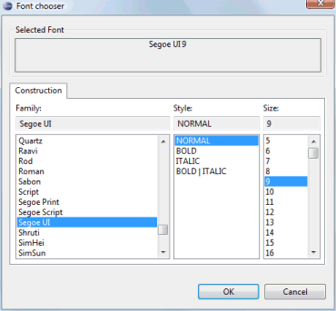
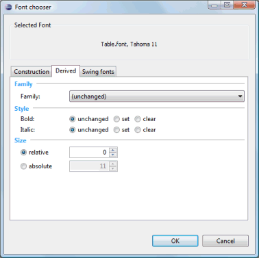
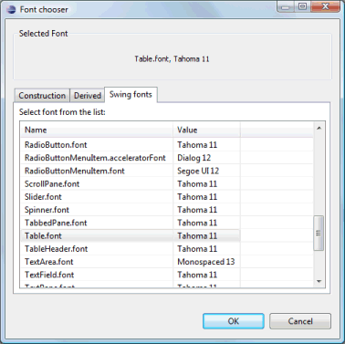

Click the
 button
to access the Font Chooser and select a font.
button
to access the Font Chooser and select a font.
The Font Chooser allows a font to be constructed by selecting a font family, a style and a size. The currently selected font is shown at the top of the page.

When designing Swing windows, two other pages are available: Derived and Swing fonts.
 